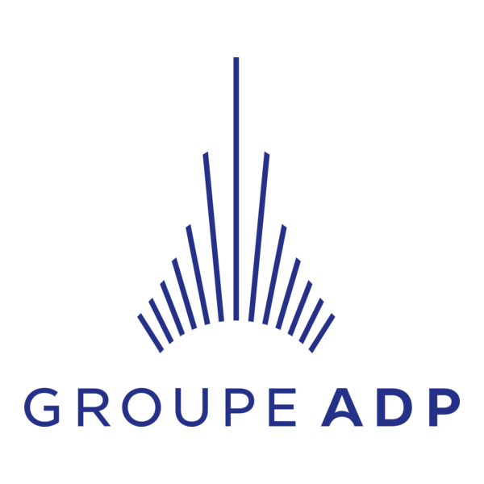
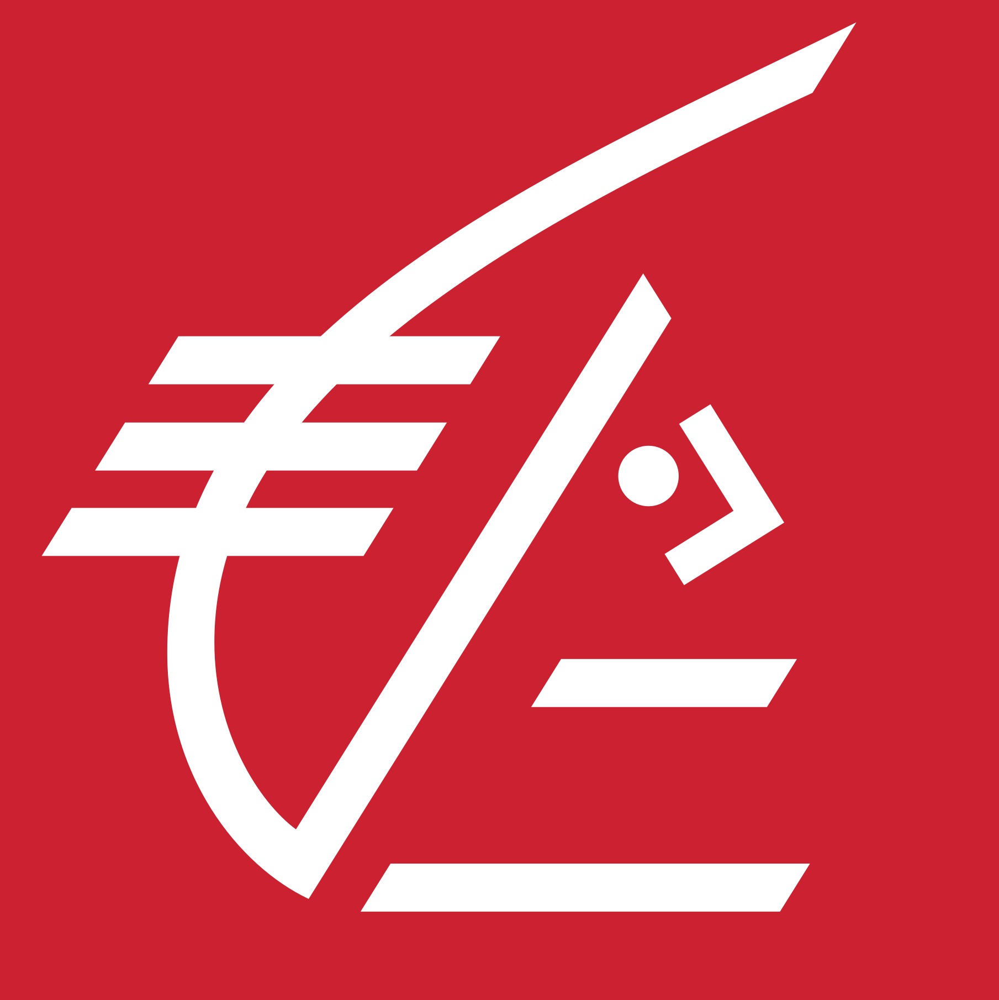

Portfolio — Épreuve E5 · 2025
Je conçois, sécurise et documente des environnements réseau & systèmes (LAB, segmentation, supervision, durcissement) avec une approche terrain : tests, preuves, et amélioration continue.
Profil
Passionné par les réseaux et la cybersécurité, je transforme curiosité technique et auto-formation en compétences concrètes.
Étudiant en 2ème année de BTS SIO option SISR à l'IPSSI de Marne-la-Vallée, j'ai confronté mes acquis à deux environnements professionnels exigeants. Au Groupe ADP, pôle cybersécurité : LAB réseau complet, projet Bastion, veille technologique. À la Caisse d'Épargne Normandie, DSI du siège : CMDB SharePoint, baie de brassage, déploiement AV.
En parallèle, je développe des agents IA autonomes avec n8n et m'auto-forme en continu sur TryHackMe et d'autres plateformes.
Expériences professionnelles
Deux immersions dans des environnements réels qui ont construit ma vision du métier.


Travaux techniques
Projets scolaires, en stage et personnels.
Intelligence sectorielle
Veille structurée et suivie via Feedly — organisée en catégories, avec des sources fiables et récurrentes.
Voir ma veille sur FeedlyThématiques
Accréditations
Lettre de recommandation
Arthur fait preuve d'une remarquable capacité à s'approprier des concepts techniques complexes et à les mettre en pratique avec méthode et autonomie. Son investissement constant dans ses projets personnels et professionnels témoigne d'une vraie passion pour les réseaux et les systèmes. C'est un profil sérieux, curieux et fiable.
Télécharger la lettre de recommandation (PDF)grizonarthur.pro@gmail.com · 06 58 37 02 69 · Chessy, 77700